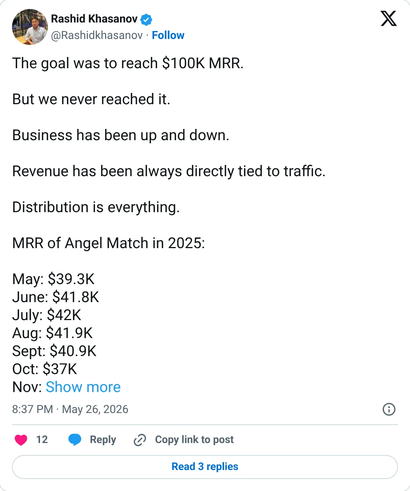
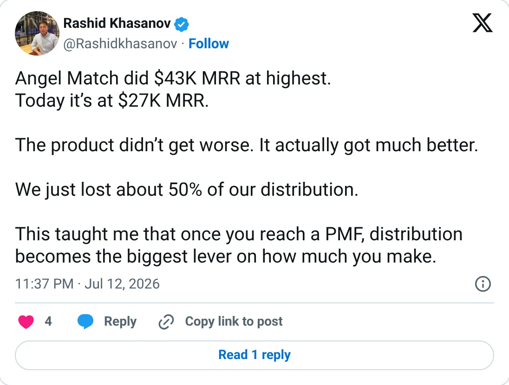

Not a pick
Angel Match
The ledger looks real. It is not one of the clearer things to start next.
$24.4K MRR
Should you build this
The money looks real, and it is still not a recommendation to start a copy. Angel Match's founder posted his own 2025 months around $37–42K and later wrote that the high was $43K MRR and the number now was $27K. TrustMRR reads $24.4K. He is a little above the processor and clearly not hiding the drop. Verified, current, and pointed the unflattering direction.
Cited from the captured posts, shown below: the earliest captured post (May 26, 2026) is the source for “Founder posts his 2025 MRR by month: ~$39K–42K from May to Sep, then $37K in Oct”; the latest milestone (Jul 12, 2026) is the source for “Founder: "$43K MRR at the highest, today $27K"”.
Posts this is based on

Founder posts his 2025 MRR by month: ~$39K–42K from May to Sep, then $37K in Oct
Open on X

Founder: "$43K MRR at the highest, today $27K"
Open on X
What the product is
Searchable database of 124,000 angel investors and VCs for founders raising a seed round. Founded Jan 2019 in the US. Seven years in, it shows a slow, multi-year climb. TrustMRR shows $964K all-time revenue.
Public trail
- $2KVerified revenue in May 2022 (first month tracked) source
- $2.3KVerified revenue in Dec 2022 source
- $5.1KVerified revenue in Aug 2023 source
- $10KVerified revenue in Mar 2024 source
- $22.2KVerified revenue in Nov 2024 source
- $36.8KVerified revenue in Jun 2025 source
- $41.5KVerified revenue in Sep 2025 (peak month) source
- $33.5KVerified revenue in Feb 2026 source
- •Founder posts his 2025 MRR by month: ~$39K–42K from May to Sep, then $37K in Oct source
- •Founder: "$43K MRR at the highest, today $27K" source
- $25KVerified revenue in Aug 2026 source
- $28.4KVerified revenue in Sep 2026 (latest full month) source